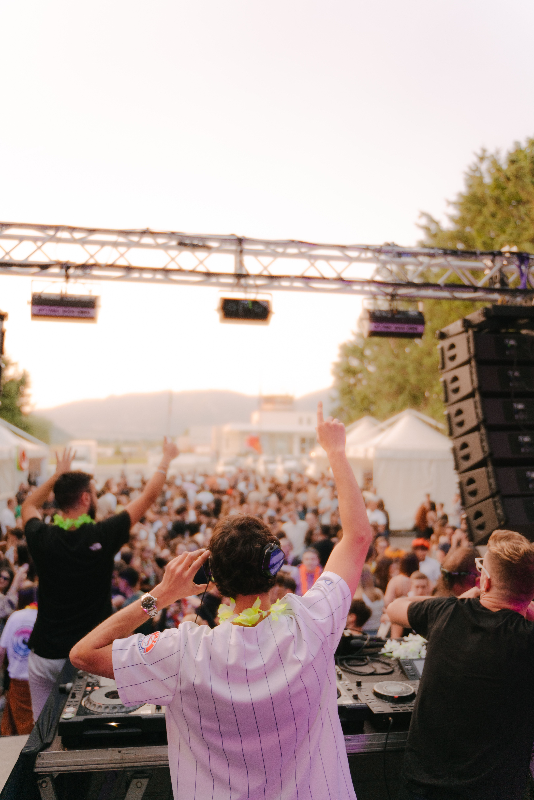
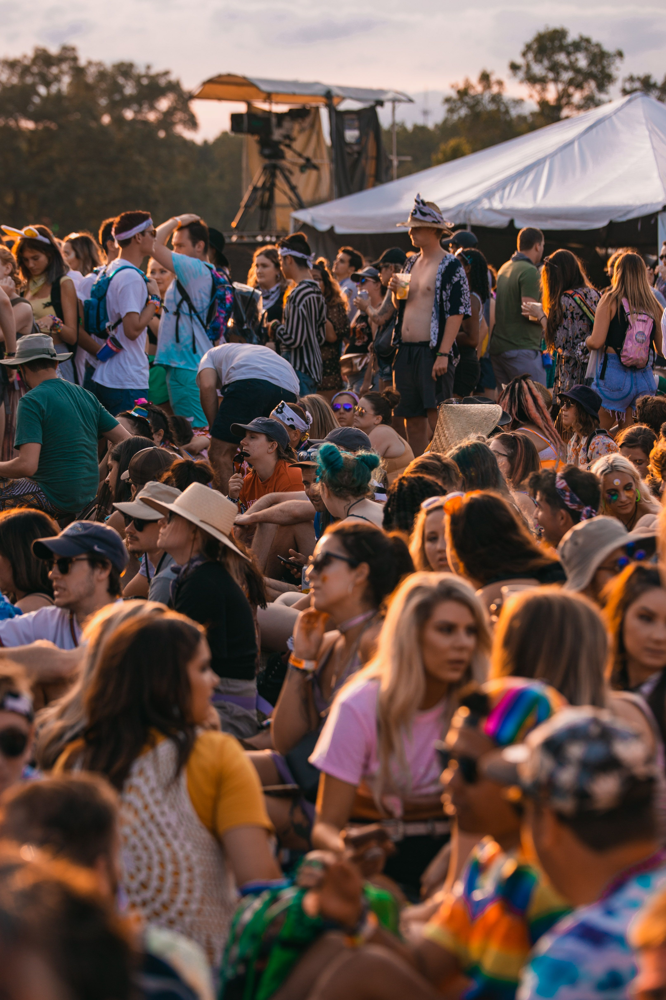
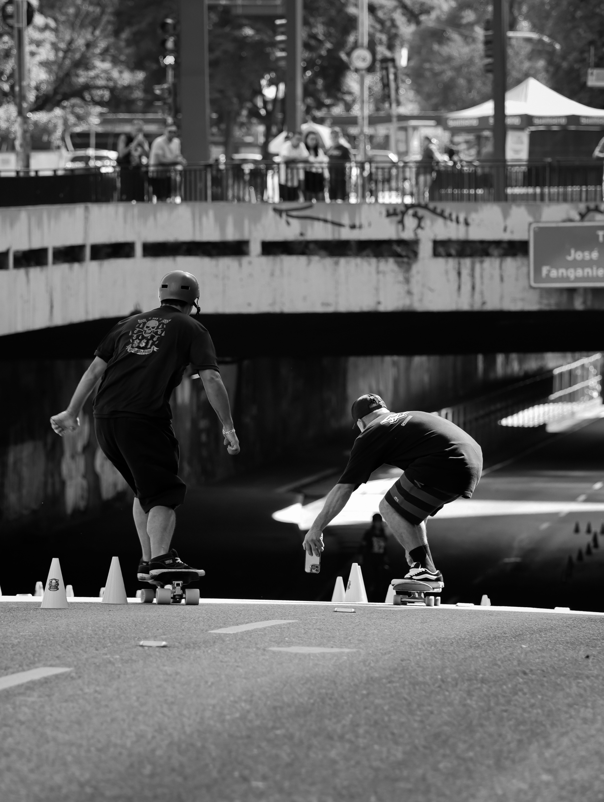
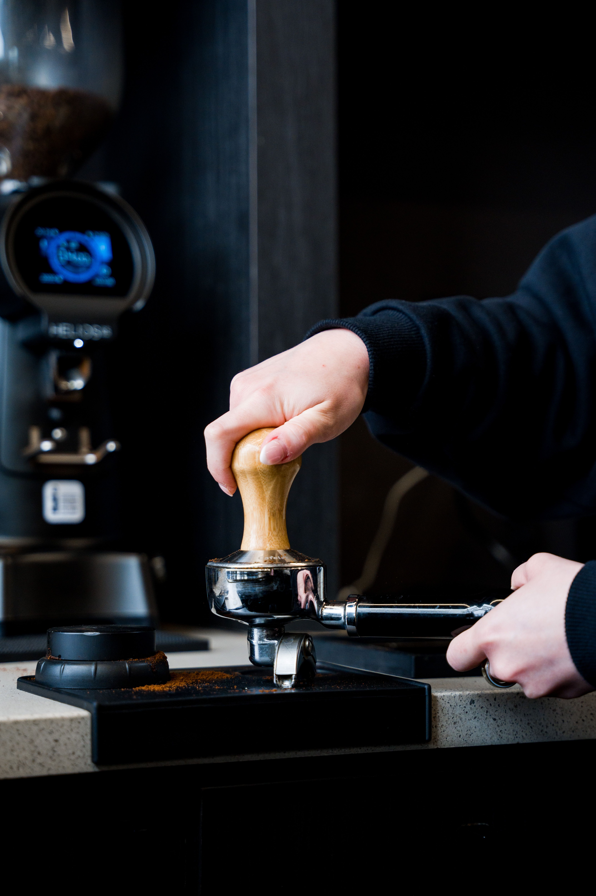
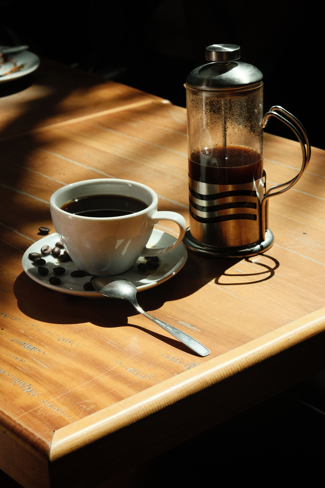

Além do palco
Festivais transformam música em experiências que ultrapassam os limites do palco.
Um olhar editorial sobre cultura, esporte e estilo de vida.

Festivais transformam música em experiências que ultrapassam os limites do palco.

O encontro entre artistas e público continua sendo uma das grandes forças da música.

Música, comportamento e identidade se encontram nos grandes festivais.

Resistência, estratégia e quilômetros definem a experiência sobre duas rodas.

O skate transforma arquitetura urbana em território de criatividade.
Técnica, leitura do oceano e conexão com a natureza.

Café também é ritual, técnica e experiência.

Grooming, estilo e tradição encontram novas interpretações.

Pequenos rituais podem transformar momentos comuns em experiências.
Imagens que traduzem o universo VÉRTICE.

Jornalista apaixonado por música, esportes, café e cultura. Entre festivais, estradas, ondas e boas conversas, busca histórias que merecem ser descobertas.
Cultura, estilo e movimento.
Envie uma mensagem para a redação do VÉRTICE.